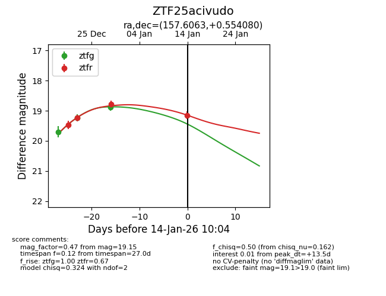
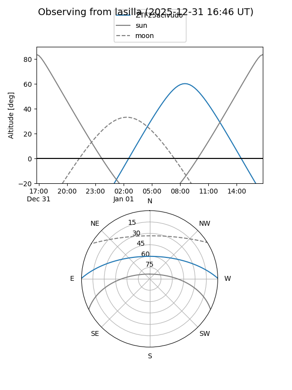
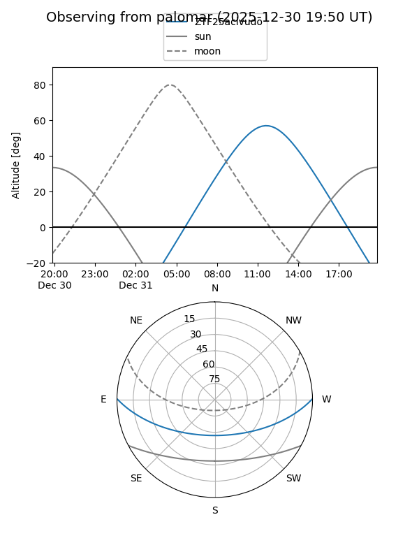
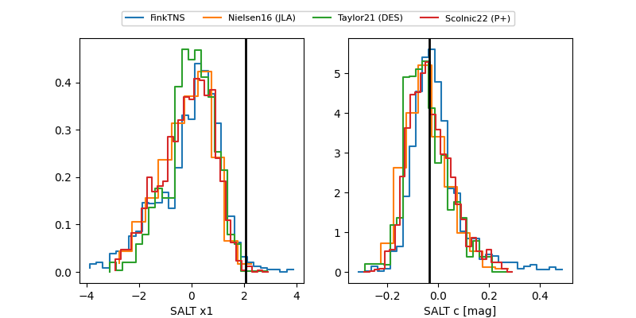

ZTF25acivudo
Target ZTF25acivudo at 2026-01-14 10:05
Aliases and brokers:
FINK: link
Lasair: link
ALeRCE: link
alt names
ZTF25acivudo (ztf,fink_ztf)
Coordinates:
equatorial (ra, dec) = 157.6063,+0.55408
equatorial (HMS+DMS) = 10:30:25.51,+00:33:14.69
galactic (l, b) = (245.1516,+46.98274)
Flags:
Photometry:
last ztfg=18.88, ztfr=19.15
3 ztfg, 4 ztfr detections
Lightcurve

Visibility


Additional plots
